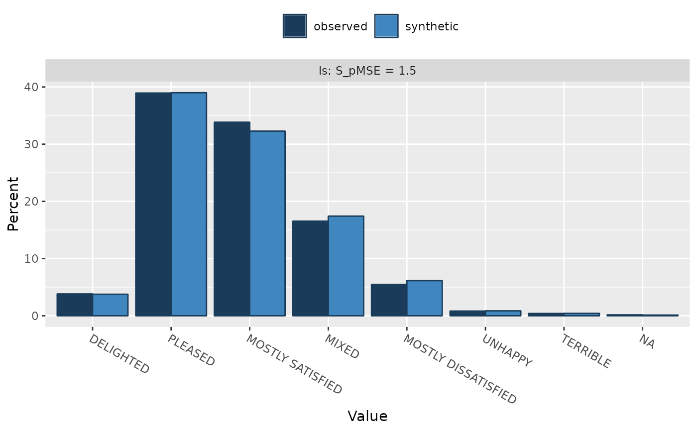

Compare univariate distributions of synthesised and observed data
compare.synds.RdCompare synthesised data set with the original (observed) data set
using percent frequency tables and histograms. When more than one
synthetic data set has been generated (object$m > 1), by
default pooled synthetic data are used for comparison.
This function can be also used with synthetic data NOT created by
syn(), but then an additional parameter cont.na might
need to be provided.
Usage
# S3 method for synds
compare(object, data, vars = NULL,
msel = NULL, stat = "percents", breaks = 20,
nrow = 2, ncol = 2, rel.size.x = 1,
utility.stats = c("pMSE", "S_pMSE", "df"),
utility.for.plot = "S_pMSE",
cols = c("#1A3C5A","#4187BF"),
plot = TRUE, table = FALSE, ...)
# S3 method for data.frame
compare(object, data, vars = NULL, cont.na = NULL,
msel = NULL, stat = "percents", breaks = 20,
nrow = 2, ncol = 2, rel.size.x = 1,
utility.stats = c("pMSE", "S_pMSE", "df"),
utility.for.plot = "S_pMSE",
cols = c("#1A3C5A","#4187BF"),
plot = TRUE, table = FALSE, ...)
# S3 method for list
compare(object, data, vars = NULL, cont.na = NULL,
msel = NULL, stat = "percents", breaks = 20,
nrow = 2, ncol = 2, rel.size.x = 1,
utility.stats = c("pMSE", "S_pMSE", "df"),
utility.for.plot = "S_pMSE",
cols = c("#1A3C5A","#4187BF"),
plot = TRUE, table = FALSE, ...)
# S3 method for compare.synds
print(x, ...)Arguments
- object
an object of class
synds, which stands for 'synthesised data set'. It is typically created by functionsyn()and it includesobject$msynthesised data set(s) asobject$syn. Alternatively, when data are synthesised not usingsyn(), it can be a data frame with a synthetic data set or a list of data frames with synthetic data sets, all created from the same original data with the same variables and the same method.- data
an original (observed) data set.
- vars
variables to be compared. If
varsisNULL(the default) all synthesised variables are compared.- cont.na
a named list of codes for missing values for continuous variables if different from the
Rmissing data codeNA. The names of the list elements must correspond to the variables names for which the missing data codes need to be specified.- msel
index or indices of synthetic data copies for which a comparison is to be made. If
NULLpooled synthetic data copies are compared with the original data.- stat
determines whether tables and plots present percentages
stat = "percents", the default, or countsstat = "counts". Ifm > 1andmsel = NULLaverage counts for synthetic data are derived.- breaks
the number of cells for the histogram.
- nrow
the number of rows for the plotting area.
- ncol
the number of columns for the plotting area.
- rel.size.x
a number representing the relative size of x-axis labels.
- utility.stats
a single string or a vector of strings that determines which utility measures to print. Must be a selection from:
"VW","FT","JSD","SPECKS","WMabsDD","U","G","pMSE","PO50","MabsDD","dBhatt","S_VW","S_FT","S_JSD","S_WMabsDD","S_G","S_pMSE","df". Ifutility.stats = "all", all of these will be printed. For more information see the details section forutility.tab.- utility.for.plot
a single string that determines which utility measure to print in facet labels of the plot. Set to
NULLto print variable names only.- cols
bar colors.
- plot
a logical value with default set to
TRUEindicating whether plots should be produced.- table
a logical value with default set to
FALSEindicating whether tables should be printed.- ...
additional parameters.
- x
an object of class
compare.synds.
Details
Missing data categories for numeric variables are plotted on the same plot
as non-missing values. They are indicated by miss. suffix.
Numeric variables with fewer than 6 distinct values are changed to factors in order to make plots more readable.
Value
An object of class compare.synds which is a list including a list
of comparative frequency tables (tables) and a ggplot object
(plots) with bar charts/histograms. If multiple plots are produced
they and their corresponding frequency tables are stored as a list.
References
Nowok, B., Raab, G.M and Dibben, C. (2016). synthpop: Bespoke creation of synthetic data in R. Journal of Statistical Software, 74(11), 1-26. doi:10.18637/jss.v074.i11 .
Examples
ods <- SD2011[ , c("sex", "age", "edu", "marital", "ls", "income")]
s1 <- syn(ods, cont.na = list(income = -8))
#>
#> Synthesis
#> -----------
#> sex age edu marital ls income
### synthetic data provided as a 'synds' object
compare(s1, ods, vars = "ls")
#>
#> Comparing percentages observed with synthetic
#>

#>
#> Selected utility measures:
#> pMSE S_pMSE df
#> ls 4.8e-05 0.544582 7
compare(s1, ods, vars = "income", stat = "counts",
table = TRUE, breaks = 10)
#>
#> Comparing counts observed with synthetic
#>
#> $income
#> 0 2000 4000 6000 8000 10000 12000 14000 miss.-8 miss.NA
#> observed 2978 605 92 23 9 3 0 4 603 683
#> synthetic 2966 574 106 21 11 6 0 4 588 724
#>
 #>
#> Selected utility measures:
#> pMSE S_pMSE df
#> income 3.8e-05 0.506798 6
### synthetic data provided as 'data.frame'
compare(s1$syn, ods, vars = "ls")
#>
#> Comparing percentages observed with synthetic
#>
#>
#> Selected utility measures:
#> pMSE S_pMSE df
#> income 3.8e-05 0.506798 6
### synthetic data provided as 'data.frame'
compare(s1$syn, ods, vars = "ls")
#>
#> Comparing percentages observed with synthetic
#>
 #>
#> Selected utility measures:
#> pMSE S_pMSE df
#> ls 4.8e-05 0.544582 7
compare(s1$syn, ods, vars = "income", cont.na = list(income = -8),
stat = "counts", table = TRUE, breaks = 10)
#>
#> Comparing counts observed with synthetic
#>
#> $income
#> 0 2000 4000 6000 8000 10000 12000 14000 miss.-8 miss.NA
#> observed 2978 605 92 23 9 3 0 4 603 683
#> synthetic 2966 574 106 21 11 6 0 4 588 724
#>
#>
#> Selected utility measures:
#> pMSE S_pMSE df
#> income 3.8e-05 0.506798 6
#>
#> Selected utility measures:
#> pMSE S_pMSE df
#> ls 4.8e-05 0.544582 7
compare(s1$syn, ods, vars = "income", cont.na = list(income = -8),
stat = "counts", table = TRUE, breaks = 10)
#>
#> Comparing counts observed with synthetic
#>
#> $income
#> 0 2000 4000 6000 8000 10000 12000 14000 miss.-8 miss.NA
#> observed 2978 605 92 23 9 3 0 4 603 683
#> synthetic 2966 574 106 21 11 6 0 4 588 724
#>
#>
#> Selected utility measures:
#> pMSE S_pMSE df
#> income 3.8e-05 0.506798 6